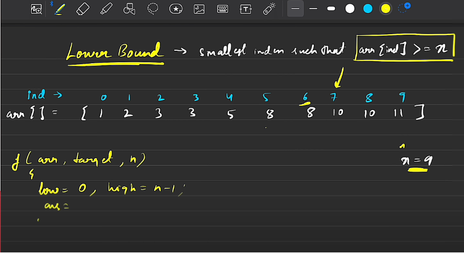
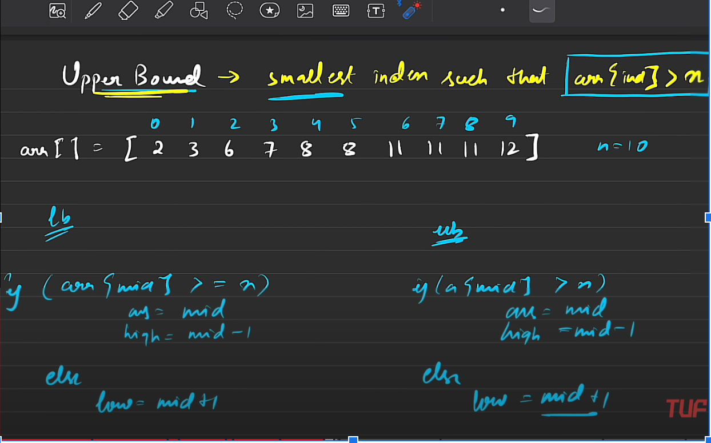

// C++ solution code goes here
int lowerBound(vector<int> arr, int n, int x) {
// Write your code here
int l = 0, r = n-1;
int idx=n;
while(l <= r)
{
int mid = l + (r-l)/2;
if(arr[mid]>= x)
{
idx = mid;
r = mid-1;
}
else
l = mid+1;
}
return idx;
}
//Usage of lower_bound stl function in language-cpp
#include <iostream>
#include <vector>
#include <algorithm> // For lower_bound
int main() {
std::vector<int> vec = {1, 3, 5, 7, 9};
// Find the lower bound of the value 5
auto it = std::lower_bound(vec.begin(), vec.end(), 5);
// Check if the lower bound exists (i.e., it's not the end of the container)
if (it != vec.end()) {
// Calculate the index by subtracting the beginning iterator from the lower_bound iterator
int index = it - vec.begin();
std::cout << "The index of the first element greater than or equal to 5 is " << index << std::endl;
} else {
std::cout << "No element greater than or equal to 5 found" << std::endl;
}
return 0;
}
//Implement upper bound
int upperBound(vector<int> &arr, int x, int n){
// Write your code here
int l = 0, r = n-1;
int idx=n;
while(l <= r)
{
int mid = l + (r-l)/2;
if(arr[mid]> x)
{
idx = mid;
r = mid-1;
}
else
l = mid+1;
}
return idx;
}
//Usage of upper_bound in cpp
#include <iostream>
#include <vector>
#include <algorithm> // For upper_bound
int main() {
std::vector<int> vec = {1, 3, 5, 7, 9};
// Find the upper bound of the value 5
auto it = std::upper_bound(vec.begin(), vec.end(), 5);
// Check if the upper bound exists (i.e., it's not the end of the container)
if (it != vec.end()) {
// Calculate the index by subtracting the beginning iterator from the upper_bound iterator
int index = it - vec.begin();
std::cout << "The index of the first element greater than 5 is " << index << std::endl;
} else {
std::cout << "No element greater than 5 found" << std::endl;
}
return 0;
}

